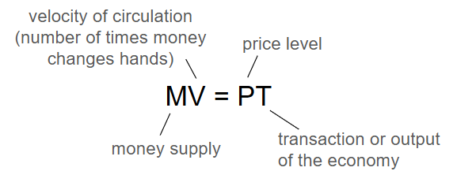
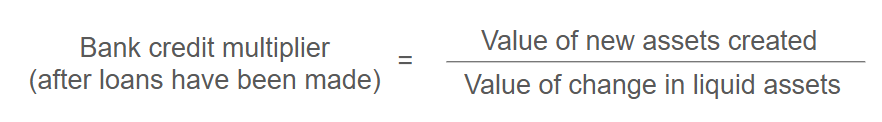
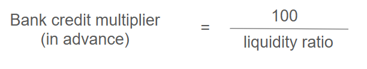
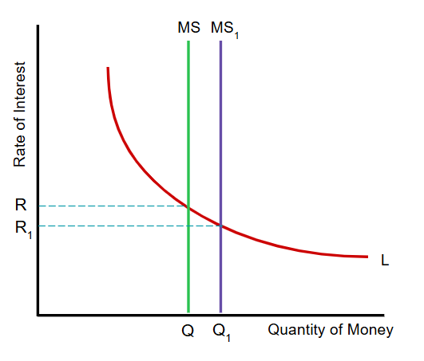
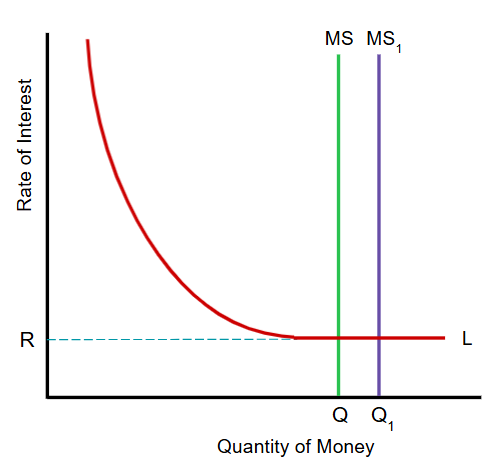
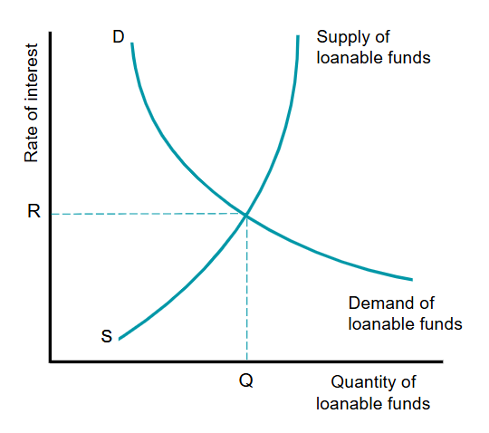
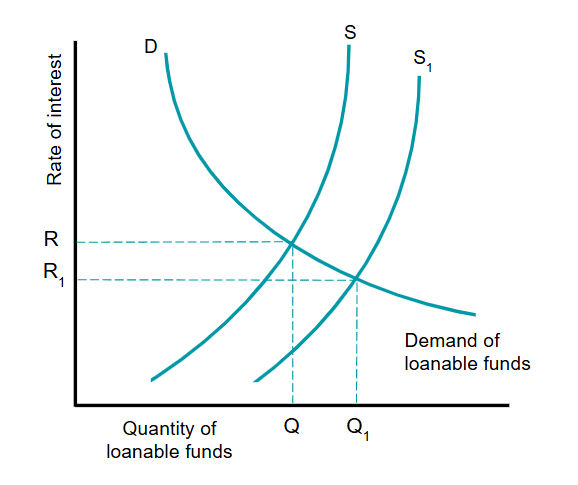

Money is an item which people use to buy and sell goods and services. It also carries out other functions.
Functions of money
Medium of exchange - we sell goods/services for money and use the money we receive to buy other goods/services.
Store of value - people can keep any money they receive from selling goods/services for future use. Money enables
people to save.
Unit of account - this function is also known as the measure of value. Money enables the value of different
items to be compared as prices are expressed in money terms.
Standard of deffered payment - money enables people, firms and government to borrow/lend and to buy/sell in the
future.
Characteristics of money
Generally acceptable- people should accept this item in exchange for goods/services, as a
store of value and standard of deffered payment
Recognisable - people have to identify the item as money
Portable - it must be easy to carry money around
Divisible - any form of money must be divisible into units of different values
Homogenous - each unit of money must be identical
Limited in supply - if there was an unlimited supply of money, it would have no value
Not easy to counterfeit - if it was easy to counterfeit money, it would lose its value
The Money Supply
The money supply is the total amount of money in an economy. It consists os currency in the circulation plus relevant deposits.
There are two main measures of money supply:
Narrow money - this is money that is used as a medium of exchange and consists of cash in circulation and held
in banks. This is sometimes known as the monetary base.
Broad money - this consists of the items in narrow money plus a range of items that are concerned with money's
functions as a store of value. An example is money in savings accounts.
The Quantity Theory of Money
Aggregate demand is influenced by the money supply. In turn, the aggregate demand can also influence the money supply.
The quantity theory of money is a theory that links inflation in an economy to changes in the money supply. This theory is based
on the fisher equation: MV = PT

Both sides of the equation has to equal each other since both sides represent total expenditure in the economy.
Monetarists assume that V and T are constant. Therfore a change in money supply will cause an equal percentage change in price level.
However Keynesians argue that V and T can change with a change in the money supply so no predictions can be made about what effect a change
in M will have on P.
Functions of Commercial Banks
Commercial banks provide accounts for their customers. There are two main types of deposit accounts:
Demand deposit account - a bank account that allows the holder/customers to make and receive payments. It
provides easy and quick access to the money in the account.
Savings deposit account - a bank account which pays interest and may require notice to be given before
money can be withdrawn from it. This type of account is used mainly as a way of saving.
Other than deposits, commercial banks also hold other assets such as:
cash
government securities - bills and bonds issue by the government to raise money
equities - shares in firms
Commercial banks have three main objectives:
Profitability - commercial banks aim to acheive high profits for their shareholders mainly by lending.
Liquiity - the ability to turn an asset into cash quickly and without loss. Banks need to have enough
liquid assets to meet requests from customers that need to withdraw their cash.
Security - they do not want to go out of business an they have to convince customers that they are
financially sound. To acheive this aim they try to ensure they have sufficient financial capital to cover their risker loans.
Sometimes these objectives may conflict. For instance, having liquid assets are not profitable.
Causes of Changes in the Money Supply
There are 5 main causes of an increase in money supply in an open economy:
an increase in commercial bank lending
an increase in government spending financed by borrowing from commercial banks
an increase in government spending financed by borrowing from the central bank
the purchase of government bonds from private sector financial institutions (quantitative easing)
more money entering than leaving the country
Commercial banks and credit creation
When commercial banks lend, they create money. This is because banks create more deposits than they have cash and other liquid assets.
Banks found that only a small percentage of deposits are cashed. When people make payments, they tend to make use of credit cards, debit cards,
and online transfers. These means of payments involve a transfer of money using entries in records that banks keep of their customers' deposits
rather than by paying out cash. So, banks can create more deposits than they have liquid assets.
The bank credit multiplier
By estimating what reserve ratio to keep, a bank will be able to calculate its bank credit multiplier.

For example, if total deposits rise by $600 million as a result of a new cash deposit of $100 million, the bank credit multiplier is
$600m/$100m = 6.
It is also possible to calculate the bank credit multipliet in advance:

The role of a central bank
The central bank of a country carries out a range of functions. It issues notes an authorises the minting of coins. Commercial banks
keep deposits in the central bank. This enables the commercial banks to withraw money when needed. Ther deposits at the central bank are
considered to be liquid assets. The commercial bank will also usually lend to commercial banks if they get into financial difficulty.
Two of the other functions of a central bank are to act as a banker to the government and to implement the governments monetary policy.
Quantitive easing
When the rate of interest is already very low, a central bank may decide to try to increase aggregate demand by the use of
quantitative easing, where the central bank buys government and private securities from the private sector in order to increase the
money supply and stimulate the economy.
Changes in the balance of payments
The total currency flow refers to the total net outflow or inflow of money resulting from international transactions.
The Effectiveness of Policies to Reduce Inflation
As discussed in previous chapters, contractionary monetary and contractionary fiscal policy can be used to reduce inflation. Supply-side
can also be used in the case if cost-push inflation.
The effectiveness of a policy can depend on whether the type of inflation has been correctly identified. For instance, if a government
introduces contractionary monetary an fiscal policies when the inflation is cost-push, the fall in aggregate demand may not have much impact
on the price level but could increase unemployment.
However, it is often difficult to distinguish between cost-push and demand-pull inflation. This is because once inflation is underway,
it is usually a mixture of both.
Some policy tools can help reduce both types of inflation in the long run. For example, an increase in government spending on education
and training may increase demand-pull inflation in the short run. However, in the long run it may reduce cost push inflation by raising
productivity and lowering production costs. It could also allow the economy to sustain larger increases in aggregate demand without
experiencing inflation.
There are some limits on the policy tools a government can use:
There is a time lag on the effects of these policies. By the time the policies are implemented and are taking effect, inflation
may have already fallen or the situation may have changed.
If the country is a member of an economic and monetary union, it will not be able to set its own interest rate.
A country may be reluctant to taise its income tax as it will encourage some of the country's skilled workers to emigrate and
will discourage multinational companies from setting up in the country.
A government may decide that inflation is a result of the money supply growing faster than output, but it can be difficult to
control the growth of the money supply. This is because commercial banks have a profit incentive to increase their loans.
The effectiveness of anti-inflationary policies is mainly dependant on how household and firms react. Contractionary monetary/fiscal
policies are usually introduced to lower demand-pull inflation. This will occur at a time when household and firms are optimistic about the
future. For example, a rise in income tax rates may cause people to work more hours to maintain their living standards rather than reduce
their spendings. Or a rise in the rate of interest may not reduce consumption and investment.
The Liquidity Preference Theory
The Keynesian concept that explains why people demand money is known as the liquidity preference.
There are three main motives for households and firms to hold part of their wealth in a money form:
Transactions motive: the desire to hold money for the day-to-day purchase of goods/services
Precautionary motive: the reason for holding money for unexpected or unforseen events (just in case of
an emergency). This amount of money held is reffered to as active balances.
Speculative motive: a reason for holding money with a view to make gains from buying financial
assets in the future. This amount of money held temporarily is known as idle balances.
It is important to note that precautionary motives for holding money are interest inelastic and speculative motive is interest elastic.
Interest Rate Determination
The liquidity preference theory of interest rate determination
Keynesians argue that interest rates are determined by the demand for and supply of money.
In this figure, L is the liquidity preference curve which represents the combined transactions, precautionary and speculative
motives for holding money.
MS is the money supply curve. The rate of interest R is where the liquidity preference curve intersects the supply of
money curve.

The liquidity preference theory of interest rate determination continued
An increase in the money supply from MS to MS1 will cause a fall in the rate of interest from R to R1.
The rate of interest falls because the rise in money supply will result in some households and firms having higher money
balances than they want to hold. As a result, they use some to buy financial assets. A rise in demand for government bonds will cause
price of bonds to rise and so the rate of interest to fall.

The liquidity trap
Although it is expected that an increase in the money supply will cause the rate of interest to fall, however, that is not always
the case. A situation where it is not possible to drive down the rate of interest by increasing money supply is called the
liquidity trap.
A liquidity trap could occur when interest rates are very low and the price of bonds is very high. Speculators may expect price
of bonds to fall in the future, so if the money supply was to be increased they would hold all the extra money. They would not buy
bonds for fear of making capital loss, and because the return from holding such securities would be low.
This graph shows that at the interest rate R, the demand for money becomes perfectly elastic and increase in money supply
has no effect on the interest rate.

Loanable Funds Theory
This theory sugguests that the rate of interest is determined by the demand for and supply of loanable funds.
The demand for loanable funds is the demand for money to borrow. The demand for loanable funds slopes down from left to right as
borrowing and the rate of interest are inversely related. The lower the interest, the more likely that economic agents will borrow more.
The supply of loanable funds comes from savings. The more money that is saved, the more money there will be availible to lend. The
supply of loanable funds curve slopes up from left to right as savings and the rate of interest are directly related. The higher the interest
rate, the more likely economic agents will save as they will gain a higher return.

Loanable Funds Theory Continued
This theory sugguests that an increase in savings will result in a rise of loanable funds and a fall in the rate of interest as shown
in the graph.
Key Terms
Money: an item which is generally acceptable as a means of payment.
Double Coincidence of Wants: a situation where two people each have something the other one wants.
Quantity Theory of Money: the theory that links inflation in an economy to changes in the money supply.
Fisher Equation: the statement that MV = PT.
Demand Deposit Account: a bank account that allows the holder to make and receive payments.
Savings Deposit Account: a bank account which pays interest and may require notice to be given before money can be withdrawn
from it.
Government Securities: bills and bonds issued by the government to raise money.
Equitites: shares in firms.
Overdraft: permission to spend more than is in a demand deposit account.
Loan: a sum of money lent at an agreed rate of interest for a specific time period.
Reserve Ratio: the proportion of liquid assets to total liabilities.
Capital Ratio: a bank's availible financial capital as a percentage of its riskier assets.
Liquidity: the ability to turn an asset into cash quickly and without loss.
Bank Credit Multiplier: the process by which banks can make more loans than deposits availible.
Quantitative Easing: a situation where a central bank buys government and private securities from the private sector in order to
increase the money supply and so stimulate economic activity.
Total Currency Flow: the net amount of money that flows into or out of the country as a result of international transaction.
Economic and Monetary Union: co-ordination of policies and the operation of a single currency by a group of countries.
Liquidity Preference: a Keynesian concept that explains why people demand money.
Transactions Motive: the desire to hold money for day-to-day buying of goods and services.
Precautionary Motive: a reason for holding money for unexpected or unforseen events.
Active Balances: the amount of money held by households or firms for possible near-future use.
Speculative Motive: a reason for holding money with a view to make future gains from buying financial assets.
Idle Balances: the amount of money held temporarily as the returns from holding financial assets are too low.
Liquidity Trap: a situation where interest rates cannot be reduced any more in order to stimulate an upturn in economic activity.